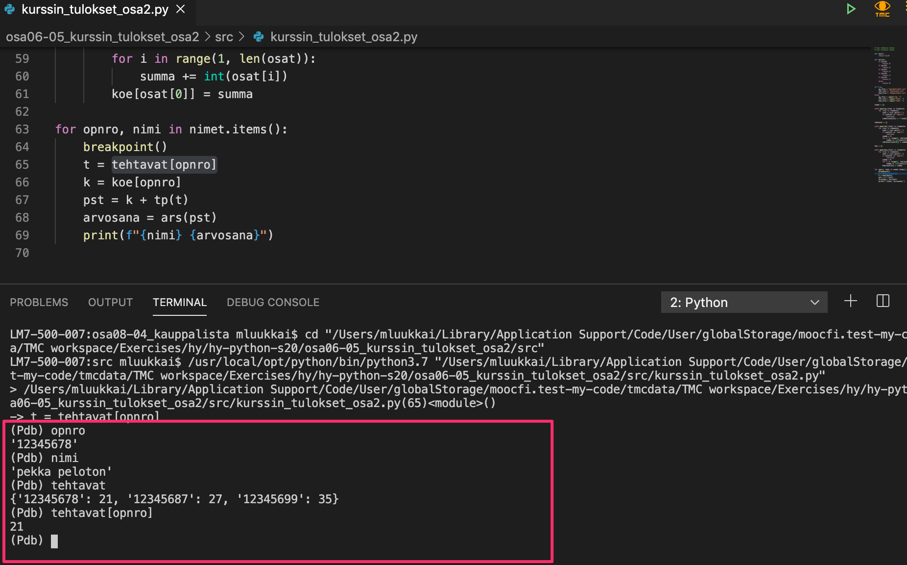
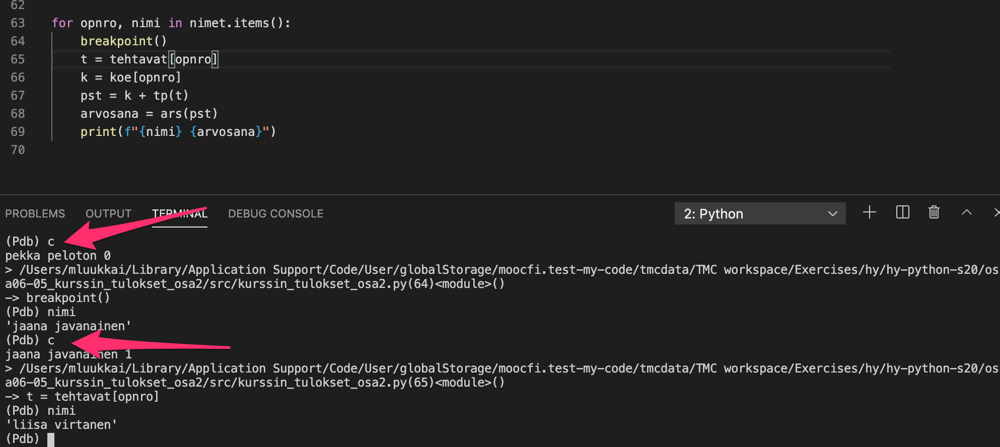
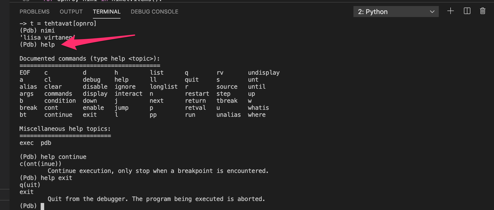

We have already come across quite a few debugging methods on this course. The visualisation tool should now be familiar to you, and debugging print outs are a good old staple by now. You have possibly also tried the Visual Studio Code built-in debugger. If you come across problems with the debugger not finding your files, there were some tips for handling these situations in the previous part.
In Python version 3.7 brought yet another easy and useful tool for debugging programs: the breakpoint() command.
You can add this command to any point in your code (within normal syntactic rules, of course). When the program is run, the execution halts at the point where you inserted the breakpoint command. Here is an example of debugging efforts when completing one of the exercises from the previous part (please ignore the Finnish variable names in the images, and concentrate on the functionality):

When the execution halts at the breakpoint command, an interactive console window is opened. Here you can write any code just as you would in a normal Python console, and see how the code works at exactly that point in the program.
The breakpoint command is especially useful when you know that some line of code causes an error, but you are not quite sure why that is. Add a breakpoint just before the problematic line of code and run your program. Now you can try out different options in the interactive console window, and figure out the correct commands to include in your program.
It is also possible to continue execution from where it halted. The command continue, or the shorthand c, typed into the debugging console will resume execution until the next breakpoint is reached. The following picture depicts a situation where the loop has already been executed a few times:

There are also some other commands available in the debugging console. You may find them here, or else you can type in help in the debugging console:

The command exit finishes the execution of the program.
When you are done debugging, remember to remove the breakpoint commands from your code!
The Python language definition already contains some useful functions, such as the len function which returns the length of a string or a list, or the sum function which returns the sum of items in a data structure, but they will only get a programmer so far. The Python standard library is a collection of standardised functions and objects, which can be used to expand the expressive power of Python in many ways. We have already used some functions defined in the standard library in previous exercises, for example when calculating square roots.
The standard library is comprised of modules, which contain functions and classes grouped around different themes and functionalities. In this part of the course we will familiarize ourselves with some useful Python modules. We will also learn to write our own modules.
The command import makes the contents of the given module accessible in the current program. Let’s have a closer look at working with the math module. It contains the definitions of some mathematical functions, such as sqrt for square root and log for logarithm.
import math
# The square root of the number 5
print(math.sqrt(5))
# the base 2 logarithm of the number 8
print(math.log(8, 2))
The functions are defined in the math module, so they must be referred to as math.sqrt and math.log in the program code.
Another way to use modules is to select a distinct entity from the module with the from command. In case we want to use just the functions sqrt and log from the module math, we can do the following:
from math import sqrt, log
print(sqrt(5))
print(log(5,2))
As you can see above, we do not need the math prefix when using the functions imported in this manner.
Sometimes a handy shortcut is to import all the contents of a module with the star notation:
from math import *
print(sqrt(5))
print(log(5,2))
Importing modules with the star notation can be useful when testing and in some smaller projects, but it can pose some new problems, too. We will come across these later.
The Python documentation has extensive resources on each module in the Python standard library. The documentation contains information on the functions and methods defined in the module, and how the module can be used. For example, here is the link to the documentation for the math module:
We can also have a look at the contents of the module with the function dir:
import math
print(dir(math))
The function returns a list of names defined by the module. These may be, for example, names of classes, constant values or functions: